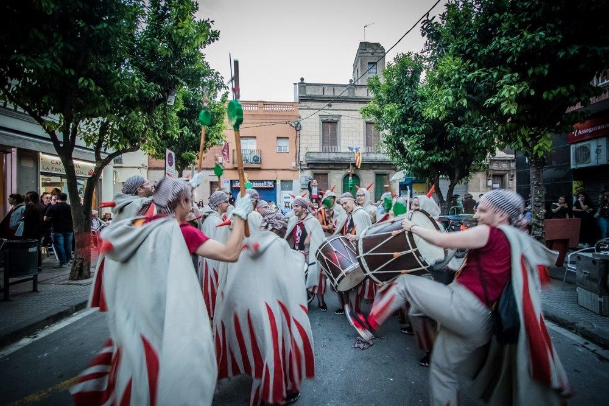
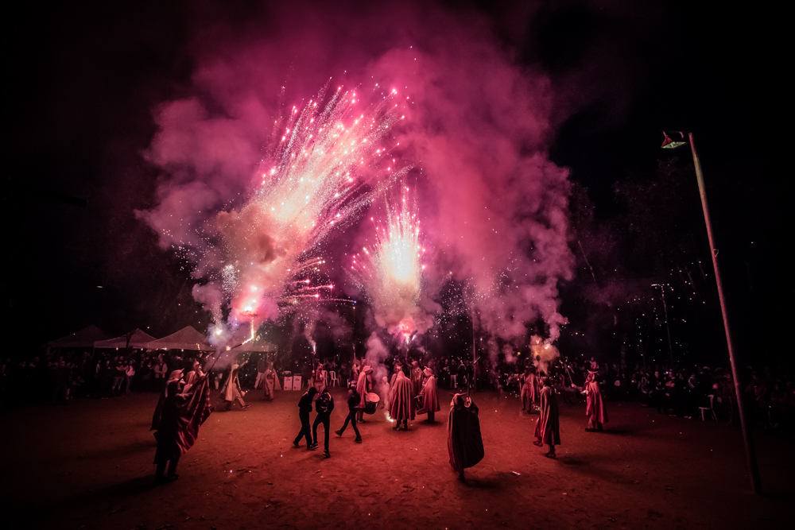
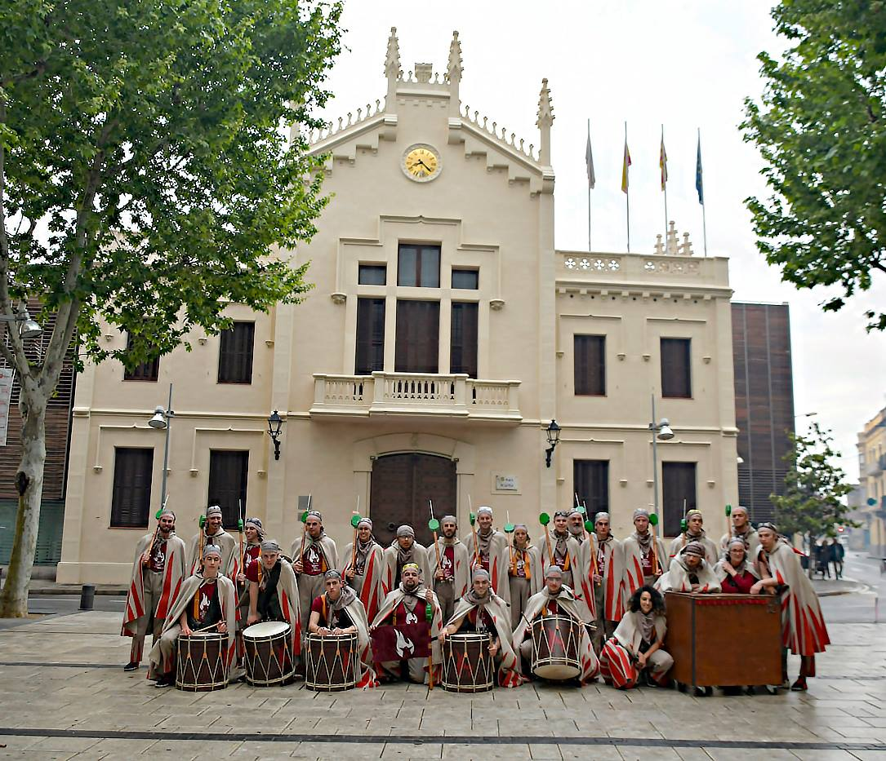

Pàgina d'inici
Actuacions
Model
Directe
Multimèdia
Contacte
Pàgina d'inici
Actuacions
Model
Directe
Contacte
1 / 6
2 / 6

3 / 6

4 / 6
5 / 6

6 / 6
❮
❯
2020 - Ball de Diables del Prat de Llobregat